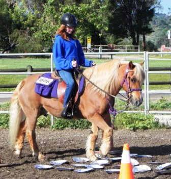
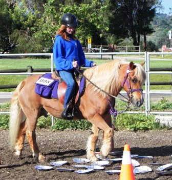
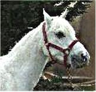

Dream Rider added a new pony to our program for special needs children. Sailor is a short but strong Haflinger pony trained to drive a cart, but also an excellent beginning riding pony for special needs children: He is very calm and steady as a rock. He is also very good for our smaller adult clients who come for rehabilitation or therapy for emotional issues.

 
Shalom, our former therapy horse for breast cancer clients
Shalom (in memorium)
Shalom was rescued from a horse auction in 2009, by Sadie’s Rescue in Northern California. They saved his life and it was his luck and ours that they got him just in time. He’d been at Sadie’s for eight months when they heard about Catherine’s quest.
When Sadie’s learned that Dream Rider was looking for a very special white horse to be our prince charming, they said they had found him.
He traveled five hundred miles to Alpine, his new home and realized the trauma of his long journey was over. He had found his home and we had found the horse we’d always wanted, a horse whose beauty and kind nature would restore us to our own beauty and inner peace.
He was renamed Shalom when he arrived. He found peace at Dream Rider and he offers peace to us all.
| Shalom expresses his affection for volunteer, Karen Donahue. | |
 |
|
| Volunteer, Cori Hoody introduces Shalom to his volunteer friends and his new career at the age of thirty, (ninety in human years). | Kelly Houlihan and beautiful Shalom wait for his new rider. |
Shalom, uniquely suited to work with our breast cancer clients, combines grace, patience sensitivity, and affection.
Here he stands quietly and enjoys a stroke from his first breast cancer client, Nicole as they all prepare to begin movement to music.
Nicole is not a rider, but soon she will become a partner with our gentle Shalom. She will learn the rhythm of harmonious movement with the horse. This moment will enhance her resilience in her recovery during the phases of her treatment.
Treasure
Treasure is trained for beginning to advanced able-bodied riders as well as for children in the special needs program. Treasure has performed in 4H, Pony Club, local horse shows and has a very sweet disposition This lovely pinto quarter pony has given lessons to dozens of challenged children at Dream Rider since 2004, when she was purchased as a therapy pony at the age of twelve. To see Treasure’s children scroll down to view her photo gallery. Here is the story of Alise, one of Treasure’s very special children.
In 2005, Alise arrived here at the age of six. She did not speak and wore leg braces, but very quickly through her love of her baby Einstein music to which she rode and the mutual curiosity she and Treasure shared about each other, Alise began to ride and speak. Here is Alise on Treasure at the age of six.
| 2005 - Alise on Treasure at age six. She did not talk or walk. Surgery interfered in 2008 | 2010 - Alise, at age eleven returns to ride again. She can now speak a few words in a sentence and is regaining strength. |
Alise developed strength and speech on Treasure until she was nine-years-old when both she and Catherine suffered setbacks. Due to birth defects, it was determined that Alise needed major reconstructive surgery on her feet, legs and hips. She spent two years in body casts and it was feared that all the progress she had made on Treasure would be lost. But Alise and Treasure would not forget each other.
Meanwhile, Catherine got breast cancer and had to give up her program and for a while she gave up Treasure too, because she could not care for her pony. But Treasure came back and helped Catherine to heal herself. When Dream Rider reopened, Alise had been in physical therapy for six months. Alise is now eleven years old and starting over, just like Catherine. Alise came back and is now rebuilding her strength once again with little Treasure’s help. Treasure is happy to have her now not so little girl back.
Here Alise is working on strength and balance exercises with the help of Dream Rider’s volunteers, Joanna Mueller, Kim Beckett and Karen Donahue taking pictures.
| Alise doing exercises on Treasure 2010 | Alise rides to music on Treasure 2010 |
In 2008, Treasure saved Catherine’s life when she allowed her, an adult to take the same therapy she’d offered the children. It was a period of extraordinary healing and support that this wonderfully patient pony offered to her mistress in a time of great need
| Treasure helps her mistress heal 2008 |


{kind=link}